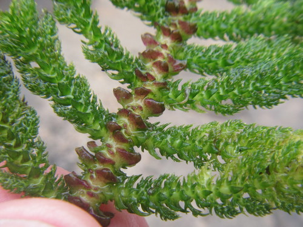

Hydrostachyaceae
(No widely accepted common name)
Hydrostachyaceae is a highly specialized family of aquatic flowering plants belonging to the order Cornales. It contains a single genus, Hydrostachys, with about 20-25 species native to central/southern Africa and Madagascar. These unique plants grow attached to rocks in fast-flowing rivers and waterfalls (rheophytes), exhibiting remarkable adaptations to their turbulent environment.
Overview
The Hydrostachyaceae family, comprising solely the genus Hydrostachys, represents an extraordinary example of adaptation to extreme aquatic environments. These perennial herbs are rheophytes, meaning they are specialized to live in fast-moving freshwater, typically anchoring themselves firmly to submerged rocks in rapids and waterfalls using tuberous or rhizomatous holdfasts. Their vegetative structure is highly variable, often resembling seaweeds, mosses, or ferns more than typical flowering plants.
Distributed across tropical and southern Africa and Madagascar, these plants undergo seasonal growth cycles often linked to water levels, flourishing when water flow is strong and sometimes dying back during dry periods. Their reproductive structures are also highly adapted, with flowers aggregated into dense, emergent spikes that facilitate wind or water pollination.
Hydrostachyaceae holds significant evolutionary interest due to its specialized morphology and its phylogenetic placement within the order Cornales, a group otherwise composed mostly of terrestrial trees and shrubs (like dogwoods and hydrangeas). This placement highlights the remarkable evolutionary plasticity of flowering plants. The family has little direct economic importance but plays a role in its specific aquatic ecosystems.
Quick Facts
- Scientific Name: Hydrostachyaceae Engl.
- Common Name: (None widely accepted; sometimes informally grouped with riverweeds)
- Number of Genera: 1 (Hydrostachys)
- Number of Species: Approximately 20-25
- Distribution: Central and Southern Africa, Madagascar
- Evolutionary Group: Eudicots - Asterids - Cornales
Key Characteristics
Growth Form and Habit
Perennial, submerged aquatic herbs firmly attached to rocks in fast-flowing freshwater (rheophytes). Plants possess a basal, often tuberous or creeping rhizomatous holdfast for anchorage. Stems arise from the holdfast, bearing leaves, or leaves may arise directly from the holdfast structure.
Leaves
Leaves are highly variable in form, even within a single species, likely influenced by water flow conditions. They can be simple, pinnately or palmately compound, highly dissected, filiform, or scale-like. Arrangement is typically spiral or distichous (in two ranks) along stems, or leaves form a basal tuft. They lack stomata.
Inflorescence
Flowers are densely aggregated into emergent, bracteate, unisexual spikes or spike-like structures that often resemble small catkins or horsetails (Equisetum). These spikes arise from the submerged vegetative parts and stand above the water surface.
Flowers
Flowers are minute, unisexual (plants dioecious or monoecious), and highly reduced, lacking a perianth (sepals and petals). Each flower is typically subtended by a bract.
- Male Flowers: Usually consist of a single stamen (rarely two) with a short filament and an anther that dehisces by longitudinal slits. Pollen may be released individually or in clumps.
- Female Flowers: Consist of a single pistil composed of two fused carpels forming a unilocular, superior ovary containing numerous ovules on parietal placentas. There are two distinct, often elongated styles.
- Pollination: Presumed to be primarily by wind (anemophily) or possibly surface water pollination (hydrophily).
Fruits and Seeds
The fruit is a small, ribbed capsule containing numerous minute seeds. Seed dispersal is likely by water (hydrochory).
Chemical Characteristics
Limited information is available on the specific secondary chemistry of Hydrostachyaceae. Their metabolism is adapted to submerged aquatic life, likely involving efficient carbon uptake mechanisms from water. They belong to the Cornales order, which includes families known for producing iridoids, but whether Hydrostachyaceae retains this trait requires further investigation.
Field Identification
Identifying Hydrostachyaceae (Hydrostachys) relies heavily on recognizing its unique habitat and morphology:
Primary Identification Features
- Habitat: Exclusively found attached to rocks in fast-flowing rivers, rapids, and waterfalls.
- Habit: Submerged plant with a distinct tuberous or rhizomatous holdfast.
- Vegetative Form: Highly variable, often dissected or compound leaves resembling algae or mosses.
- Inflorescence: Dense, emergent, unisexual, spike-like structures arising from the submerged parts, often resembling small horsetails or catkins.
- Flowers: Minute, lacking petals/sepals, aggregated on the spikes.
Secondary Identification Features
- Leaves: Check for highly variable shapes (simple, compound, dissected) and arrangement (spiral, distichous, basal).
- Spike Bracts: Note the presence of bracts subtending the highly reduced flowers on the spikes.
- Dioecious/Monoecious: Determine if male and female spikes are on separate plants (dioecious) or the same plant (monoecious).
Seasonal Identification Tips
Observation depends on seasonal water flow:
- High Flow Season: Vegetative growth is typically most vigorous.
- Falling/Lower Water Levels: Emergent reproductive spikes are most likely to be visible.
- Dry Season: Plants may die back to the persistent holdfasts or become dormant.
Common Confusion Points
Due to their unusual form, Hydrostachys might be confused with:
- Podostemaceae (Riverweed family): Another family of rheophytes with highly modified vegetative structures. Podostemaceae often have more thalloid (flattened, undifferentiated) bodies and typically possess small, bisexual flowers with a perianth or spathella, and superior ovaries often with 2-3 styles. Their phylogenetic placement is different (Malpighiales).
- Algae: Some large, filamentous or complex algae might superficially resemble vegetative Hydrostachys.
- Aquatic Mosses/Liverworts: Certain bryophytes growing on rocks in streams could be confused, but lack true roots, flowers, or the characteristic spikes of Hydrostachys.
Field Guide Quick Reference
Look For:
- Plants on rocks in fast-flowing water
- Tuberous/rhizomatous holdfast
- Submerged, variable (often dissected) leaves
- Emergent, dense, catkin/horsetail-like spikes
- Minute, unisexual flowers without perianth on spikes
Key Variations:
- Leaf shape (highly variable)
- Spike length and thickness
- Plant sex (dioecious vs. monoecious)
- Holdfast shape
Notable Examples (Genus Hydrostachys)
All species belong to the genus Hydrostachys. Species identification can be difficult due to morphological variability.

Hydrostachys polymorpha
(Polymorphic Hydrostachys)
As the name suggests, this species exhibits significant variation in leaf morphology. Found in southern and central Africa. Leaves can range from simple to highly dissected.

Hydrostachys multifida
(Multifid Hydrostachys)
A species often characterized by its finely divided, feathery leaves. Found in parts of central and southern Africa. Like others, grows attached to rocks in fast water.

Hydrostachys madagascariensis
(Madagascar Hydrostachys)
Endemic to Madagascar, this species represents the genus on the island. Adapted to the specific river conditions found there. Leaf morphology can vary.
Phylogeny and Classification
The phylogenetic placement of Hydrostachyaceae was long uncertain due to its highly derived morphology. However, molecular phylogenetic studies have robustly placed it within the order Cornales, nested within the Asterid clade of eudicots. This placement is surprising given that most other families in Cornales are terrestrial trees and shrubs (e.g., Cornaceae - dogwoods, Hydrangeaceae - hydrangeas, Loasaceae - blazing stars).
Within Cornales, Hydrostachyaceae is often found to be sister to Hydrangeaceae or part of a clade including Hydrangeaceae and Loasaceae. Its extreme morphological adaptations for a rheophytic lifestyle obscure its relationship based on traditional characters, highlighting the power of molecular data in resolving challenging phylogenetic questions.
Position in Plant Phylogeny
- Kingdom: Plantae
- Clade: Angiosperms (Flowering plants)
- Clade: Eudicots
- Clade: Asterids
- Order: Cornales
- Family: Hydrostachyaceae
Evolutionary Significance
Hydrostachyaceae is highly significant from an evolutionary perspective:
- Extreme Adaptation: Demonstrates remarkable morphological and physiological adaptations to a highly challenging aquatic environment (fast-flowing water).
- Convergent Evolution: Shares habitat and some superficial similarities with Podostemaceae, but represents an independent evolution of the rheophytic habit within a completely different angiosperm lineage (Cornales vs. Malpighiales).
- Phylogenetic Surprise: Its placement within Cornales underscores the potential for major morphological shifts during plant evolution and diversification into novel ecological niches.
- Biogeography: Its distribution in Africa and Madagascar provides insights into the historical biogeography of the Cornales order.